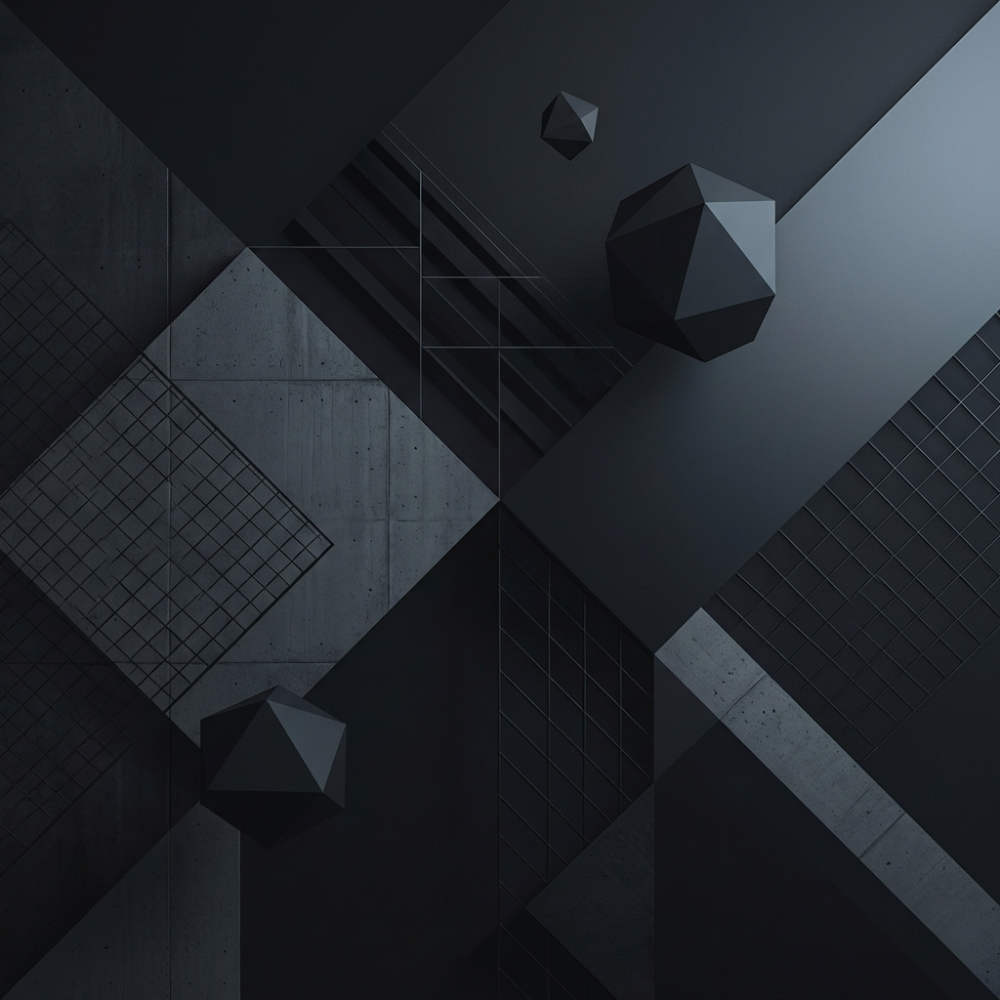

💼
방송 업무 대시보드
항목을 클릭하여 상세 정보를 확인하고 관리하세요.
Overall Tasks with Notion
요일별
업무별
예배 중심
New Task
CATEGORY
Edit
업무 제목
담당자 미지정
|
요일
|
00:00
내용이 표시됩니다.
Delete
Open Notion
Close
Manage Task
Date
화요일
수요일
목요일
금요일
토요일
주일
Category
Director (총괄)
ProPresenter
OBS
Atem/Cam/Light
Youtube
Worship Team (찬양팀)
Media (미디어)
Etc
Time
Assignee
지정 안 함
음향
프프
총괄
카메라
찬양팀
Task Title
Description
Notion Resource Link
Cancel
Save Changes
Trash Bin
Trash is empty
Close